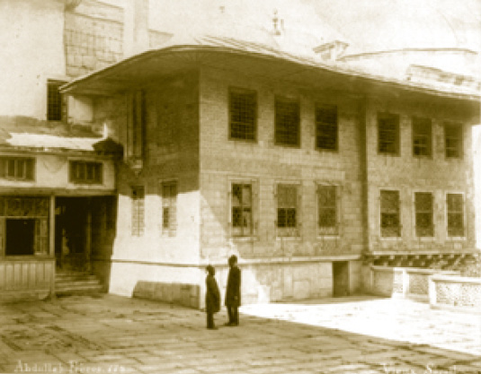
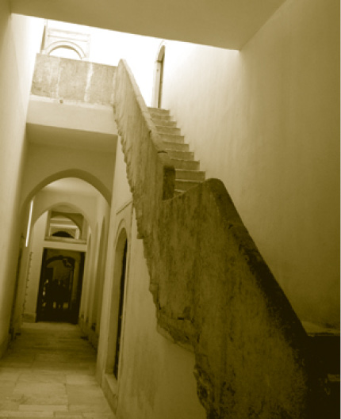
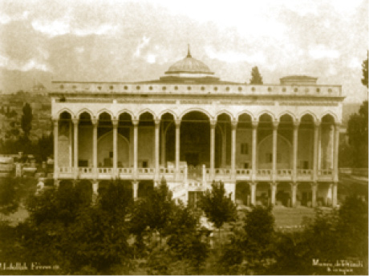
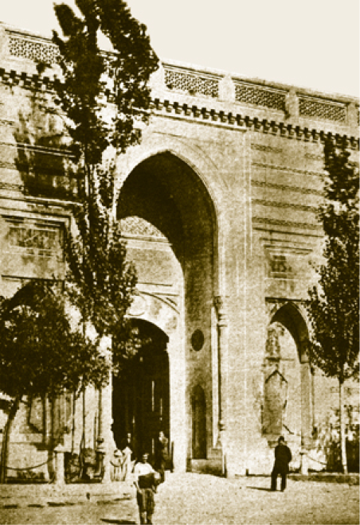
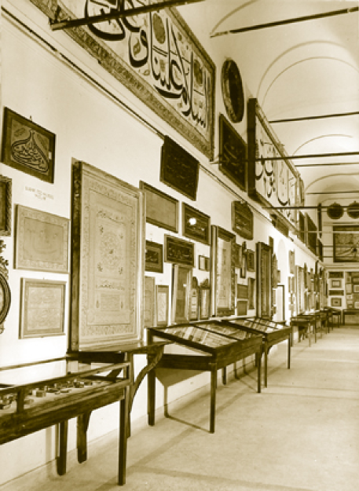

ÇİFTE KASIRLAR
III. Murad Has Odası’nın yan tarafında bulunan Çifte Kasırlar, adından da anlaşılacağı gibi birbiri içinden geçilen iki mekândan müteşekkildir. Bu mekânların ilki Kubbeli Kasır veya Sultan Osman Kasrı, ikincisi ise IV. Mehmed Kasrı olarak bilinir. Ayrıca ilkine Şehzade, ikincisine Veliaht Dairesi de denilir.
Kasırlar zamanla ihtiyaç nispetinde ahşap bölmelerle bölünerek yeni odalar teşkil edilmiştir. Daha sonra yapılan yenilenmelerde bu bölümler kaldırılarak yapının ilk hâline ulaşılmaya çalışılmıştır.
Sultan Osman Kasrı’nda çini motiflerinin arasında muhteşem bir ocak bulunur. İki tarafında kanatları sedef ve bağa kakmalı gömme dolapların bulunduğu ocağın üst sol tarafında çini panolar ve mavi zemin üzerinde Besmele ile başlayan bir yazı kuşağı yer alır ki bu yazı kuşağında Kaside-i Bürde’den beyitler bulunur.
17. yüzyılda sarayda moda hâline gelen pencere içinde çeşmeler yapılması burada da görülür. Pencere içlerindeki şirin çeşmeler ve muslukların önlerindeki kurnalarla mekânda su sesinin oluşmasına çalışılmıştır.
Kubbede kalemişi süslemelerin bulunduğu bilinmekte ve yapılan restorasyonlarda ilk süslemeler gibi süslemeler yapılarak kubbeye orijinal görünüm verilmeye çalışılmıştır.
IV. Mehmed Kasrı kubbesiz, düz tavanlıdır. Buraya III. Murad Has Odası’ndaki bir pencerenin kapıya dönüştürülmesiyle girilebilmektedir. Diğer kasırdan farklı olarak IV. Mehmed Kasrı’nda süsleme malzemesi olarak çini yerine altın yaldızlı kalemişi tezyinata ağırlık verilmiştir. Burası da Kubbeli Kasır gibi pencere içine yerleştirilmiş çeşmelere sahiptir.
Kapı kitabelerinde ayetler bulunur.
Ana mekân kare planlı olup etrafı işlemeli bir kubbe ile örtülüdür. Bütün duvarlar panolar hâlinde çiçek figürlü renkli çinilerle kaplıdır.

Çifte Kasırlar’da iki zenci saray görevlisi
Kubbeli Kasrın alt penceresinde kasır için yazılmış kasidede Hotin Seferi’nden zaferle dönmüş padişah Sultan II. Osman dünya padişahlarının en büyüğü olarak sıfatlandırılmakta ve burayı onun yaptırdığı anlatılmakta, kıyamete kadar bu kasra zeval gelmemesi, sultanın muvaffakiyet içinde saltanat sürmesi ve uzun ömürlü olması için dua edilmektedir.
IV. Mehmed Kasrı’nın kapısının iç tarafında Farsça olarak,
Dem-be- dem sa’at be sa’at ikbâlet fizûn
Duşmenet çun şişr-i sa’at hemişe sernigûn 1077 (1666) ifadesi yer alır.
Cinlerin Meşveret Yeri
Saray’da Dolaplı Sofa’daki dolaplara çeşitli menkıbeler yakıştırıldığı gibi Çifte Kasırlara uzayan revakın altında cinlerin toplandığı söylentisi yıllarca sürmüştür; ama gerçekten cinlerin buraya gelip gelmediklerinin konuşulduğu konusunda herhangi bir belge bulunmamaktadır. Ancak hususen Harem hazine dairelerinin ve Şehzadegân Dairesi’nin etrafında çok dolaşılmaması için bu tür rivayetlerin ortaya atılmış olma ihtimali yüksektir.
Harem Mescidi
Kuşhâne’nin ilerisinde Altınyol’un sağında Ağalar Camii’nin hemen arkasında yer alır. Altınyol’dan Harem Mescidi’ne sedef-bağa kakmalı bir kapıyla çıkılır. Kubbesiz olan mescidin Ağalar Camii’nin hemen arkasında yer almasının sebebi burada namaz kılacak olanların Ağalar Camii’ndeki imama uymalarıdır. Sultan III. Osman döneminde barok kabartmalı mermer ve Tekfur Sarayı üretimi çinilerle yenilenen mescide zaman zaman padişahların da geldiği bilinmekle birlikte asıl olarak valide sultanlar, başkadınefendiler, Darü’s saade ağaları namaz kılmaya gelirlerdi.
İkballer Taşlığı (Gözdeler Taşlığı)
Çifte Kasırlar, Gözdeler Dairesi ve Mabeyn Dairesi arasında yer alan üstü açık bir taşlıktır. Zemini, dairemsi taşlarla özel olarak döşenmiştir. Şehzadeler Dairesi’nin bu taşlığa bakan yüzü renkli çinilerle donanmıştır. İkballer Dairesi önü ile Şehzadeler Dairesi arasındaki koridor 14 sütuna dayanan bir revak ile çevrilidir. Taşlığın havuza bakan tarafında yer alan mermer korkuluklar Çırağan Sarayı’nın 19 Ocak 1910’da geçirdiği yangından sonra buraya getirilmiştir.
İkbâller (Gözdeler) Dairesi: İkbal’in kelime manası talihtir. Kadınefendilerden sonra gelen ve saray deyimiyle vuslatına eren (visal-i şahane) cariyelere bu isim verilmiştir.
Saraydaki ikbal sınıfı 17. yüzyıl sonlarından itibaren görülmeye başlamıştır. Nitekim bunlar için sarayda özel bir daireyi Sultan I. Abdülhamid (1725-1789) inşa ettirmiştir.
İkballer Dairesi, Altınyol’un üzerinde bulunan ve sıra hâlinde uzanan beş odadır. Bulunan revakların genişletilmesi ve yeni revakların kapatılmasıyla oluşturulan yapının tamamı ahşaptandır. Bu hâliyle Anadolu evlerini hatırlatır. Her ikbalin bir odası bulunur. Odaların duvarlarında hayali manzara resimleri bulunur. Odaların ışığı daha tasarruflu kullanmaları için “çırağma” denilen duvarlar arası cam boşluklar oluşturulmuştur.
Koğuşlar asma kattadır. Dairenin İkballer Taşlığı’na bakan sıra odaları çıkma hâlinde konsollarla revağa bağlanmıştır. Revak kemerleri içine açılan alçak tavanlı asma katlar da cariye koğuşları olarak kullanılmıştır. Bu şekilde hiyerarşik bir yapı oluşturulmuştur.
İkballer Dairesi’nin en dikkati çeken odası koridorun sonunda bulunan ve iç içe üç mekândan müteşekkil olan Başkadınefendi Dairesi’dir. Diğer odalardan gerek genişlik gerekse süsleme olarak üstün olan daire I. Abdülhamid Dairesi’nin hemen üstünde yer alır ve dolap içinden bir merdivenle bu daireyle bağlantılıdır.
Mabeyn-i Hümâyûn Dairesi (I. Abdülhamid Dairesi)
Sultan I. Selim Kulesi’ne bitişik olarak Sultan I. Abdülhamid tarafından inşa ettirilen Mabeyn Dairesi, İkballer Taşlığı’nın Has Oda cephesinde ve Başkadın Efendi Dairesi’nin altında yer alır.
Sultan I. Abdülhamid ailesi ile birlikte burada yaşamış, I. Abdülhamid Has Oda’sını ise kışlık olarak kullanmıştır.
Mabeyn Dairesi, Araba Kapısı’ndan girildiğinde, Harem mekânlarının sonuncusudur. Selamlık ile Harem arasında bulunması sebebiyle Mabeyn-i Hümâyûn Dairesi denilmiştir. İki kapısından biri olan, Demir Kapısı Havuzlu Taşlığa (saraya); diğeri ise Altınyol’a (Harem’e) açılmaktadır. Bir anlamda sarayın resmi mekânları ile padişahın özel mekânlarını birbirinden ayıran bir daire özelliği gösterir. Daire bir sofa ve iki odadan müteşekkil olup odalardan biri Aynalı Oda diğeri Taş Oda veya Hazine Odası olarak isimlendirilir.
Sofanın duvarları çiçek desenli Hollanda çinileriyle süslenmiş ve bir tarafa da rokoko üslubunda güzel bir mermer ocak yerleştirilmiştir. Sofadan Başkadınefendi Dairesi’ne çıkışı sağlayan ve servis hizmetlerinde kullanılan dolap içi bir de geçit vardır.
Sofadan Aynalı Oda’ya Taş Oda denilen bir aralıktan geçilir. Kiler olarak kullanıldığı sanılan bu oda aslında Yavuz Sultan Selim döneminde sarayın surları üzerine yapılan I. Selim Kulesi’nden günümüze kalmıştır.
Aynalı Oda, divanhâne olarak kullanılmaktadır. Adını pencerelerde cam yerine kristal aynaların kullanılmasından alır. Aynalarla daha zenginleştirilen tezyinatta rokoko süslemeler yoğun olarak kullanılmıştır. Üstte yer alan kafa pencerelerinde ise Osmanlıların meşhur sanatı vitray kullanılmıştır.
Aynalı Oda’da siyah zemin üzerine yaldızla yazılmış Hilye-i Hakani (Hz. Peygamber’in fiziki özelliklerini ve örnek davranışlarını anlatan divan edebiyatının ilk hilyesi) bulunur.
Aynalı Oda’nın kapısı üzerindeki tuğra, yapının banisine, Sultan I. Abdülhamid’e aittir. Kitabesindeki beyitlerin sonunda yer alan Hicri 1193 tarihi, 1778 yılına tekabül eder.

Cevri Kalfa, II. Mahmud’u yakalamaya çalışan asilerin üzerine bu merdivenlerde kül atarak
zaman kazanmış ve saraylıların da yardımıyla şehzadeyi dama çıkartarak kurtarmıştır.
Cevri Kalfa Dairesi
Altınyol’un üzerinde yer alan Cevri Kalfa Dairesi’ne ince, uzun bir taş merdivenle çıkılır. Merdivenin ulaştığı düzlükte iki kapı bulunur ki bu kapılardan soldaki kapı Cevri Kalfa Dairesi’ne ulaşır.
İç içe dört odadan müteşekkil olan daire, mimarisinden ziyade Osmanlı tarihinde bir padişahın hayatını kurtarması bakımından mühimdir. Sultan III. Selim’in şehid edilmesinin ardından asilerin II. Mahmud’u öldürmek için Harem’e girmeleri üzerine Cevri Kalfa koşarak Şehzadegân Dairesi’ne varmış ve şehzadeyi alarak kendi dairesine çıkartmıştır.
Asilerin durumu fark etmeleri üzerine merdiven başında onların üzerine kül atarak zaman kazanmış ve saraylıların da yardımıyla şehzadeyi dama çıkartarak kurtarılmasını sağlamıştır. II. Mahmud padişah olunca Cevri Kalfa’ya vefa göstererek onu başhazinedarı yapmıştır. Şükranının bir ifadesi olarak da Sultanahmet Divanyolu’nda bir mektep, Çamlıca’da ise bir köşk inşa ettirmiştir. Divanyolu’ndaki mektep bugün Türk Edebiyatı Vakfı binası olarak kullanılmaktadır.

Çinili Köşk
Cevri Kalfa, bir yerde hanedanın büyükannesi sayılan II. Mahmud Han’ın annesi Nakşıdil Valide Sultan’ın türbesinde onun yanı başına defnedilmiştir.
Çinili Köşk
Topkapı Sarayı’ndan evvel Fatih tarafından yaptırılan Çinili Köşk’ün planı Bursa Yıldırım Camii ile hemen hemen aynıdır. Yıllar boyunca yaşadığı hatalı tadilatlar ve yangınla orijinalliğini oldukça kaybeden Çinili Köşk en büyük tahribatı Arkeoloji Müzesi’nin açılmasından dolayı yaşamıştır. Arkeoloji Binası yapılınca Çinili Köşk’ün içindeki arkeolojik eserler yeni binaya taşınmıştır. Çinili Köşk’ün önü ok ve cirit talimlerinin yapıldığı bir yerdir. Cumhuriyet devrinde yapılan restorasyonlarda çok sayıda ok ve cirit parçalarına rastlanılmıştır.
Süslemelerinde Selçuklulardan tesirler görülen Çinili Köşk’teki çiniler emsali zor bulunan türdendir. İki katlı olan köşkün kapısının üstünde ufak bir asma kat da bulunmaktadır.

Bâb-ı Hümâyun

Sarayın müze olarak kullanıldığı ilk yıllarda yapılan hat sergisi